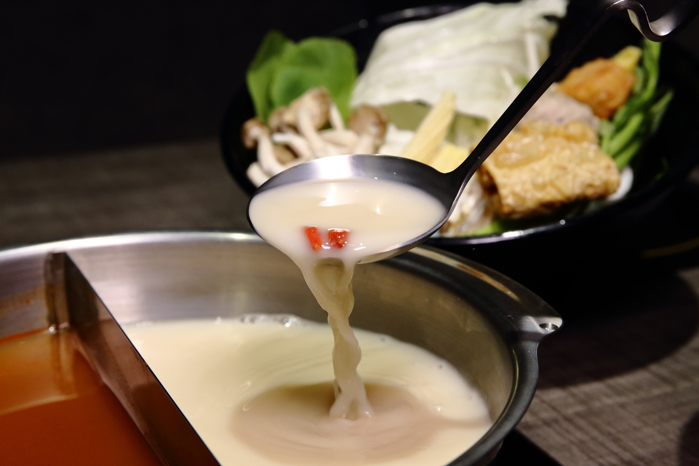
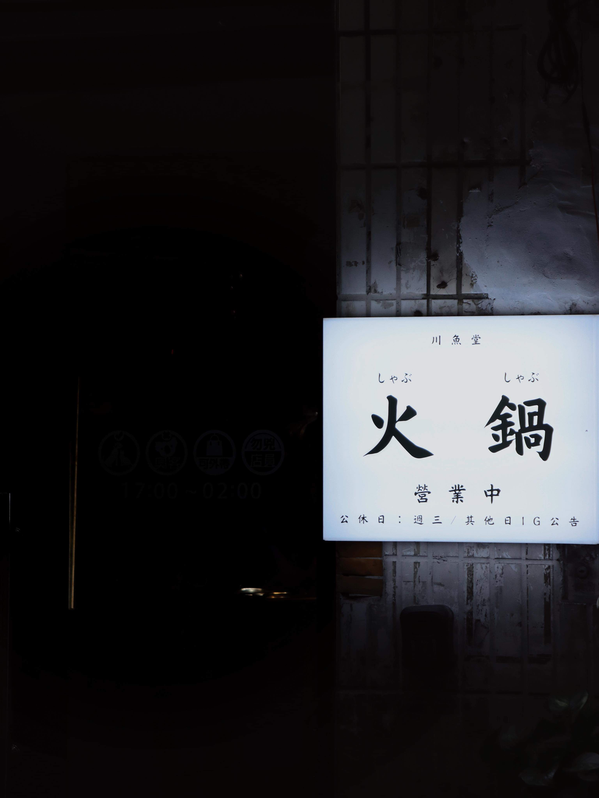
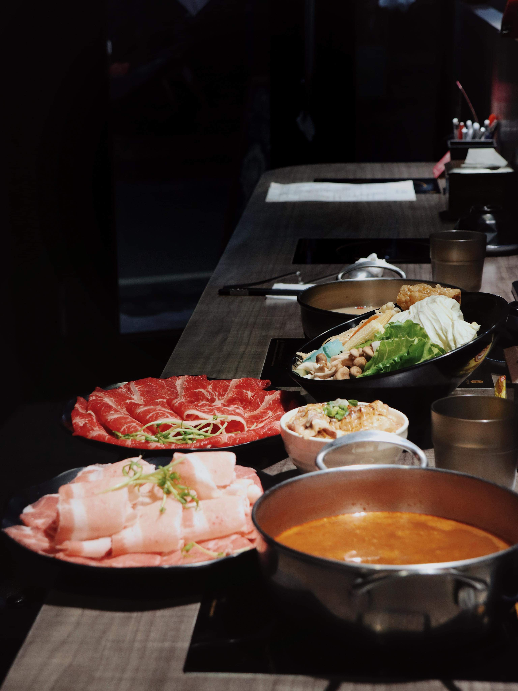
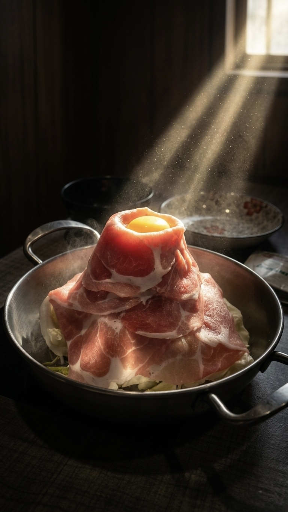
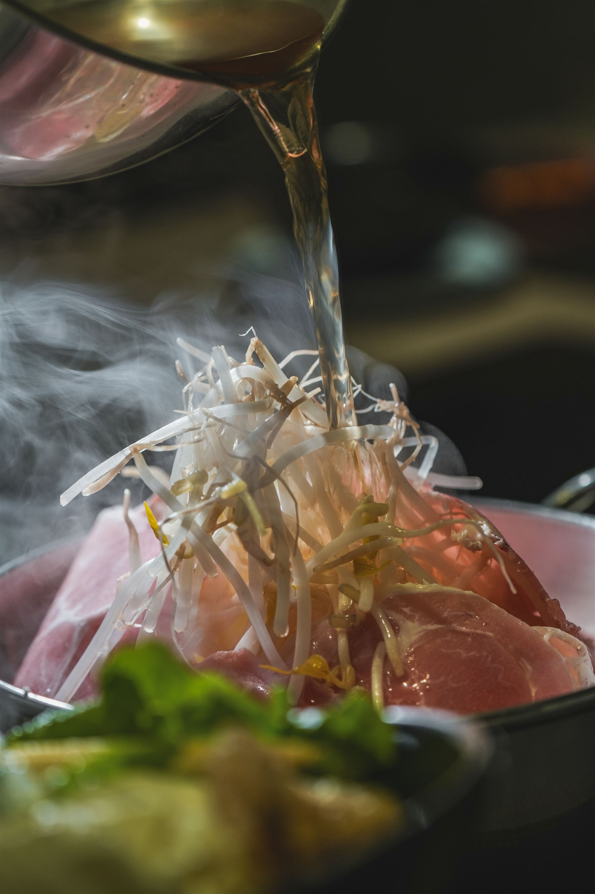
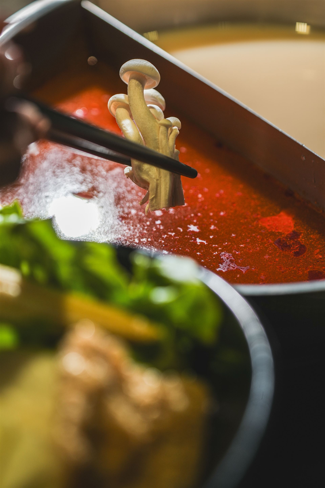

中永和深夜食堂，可以喝的溫潤藥膳
營業時間：17:00 – 01:00 (週三固定店休)
這是一段對藥膳湯底的堅持與傳承。川魚堂掌門人接下老師傅的手藝，堅持慢火細熬，讓多種草本中藥材精華自然融入湯底。
每日限熬約 20 鍋，建議提前電話確認或線上預先點餐
肉片層層堆疊如同壯觀火山，頂端佐以鮮採月見蛋黃。搭配自熬藥膳與香麻湯底，將蛋黃劃破均勻蘸裹肉片，入口滑嫩濃郁！
現點現炙燒的高級肉片，高溫逼出優質油脂與迷人焦香，淋上獨門秘製特調醬汁，鹹香入味，是老饕來川魚堂必點的靈魂附餐！